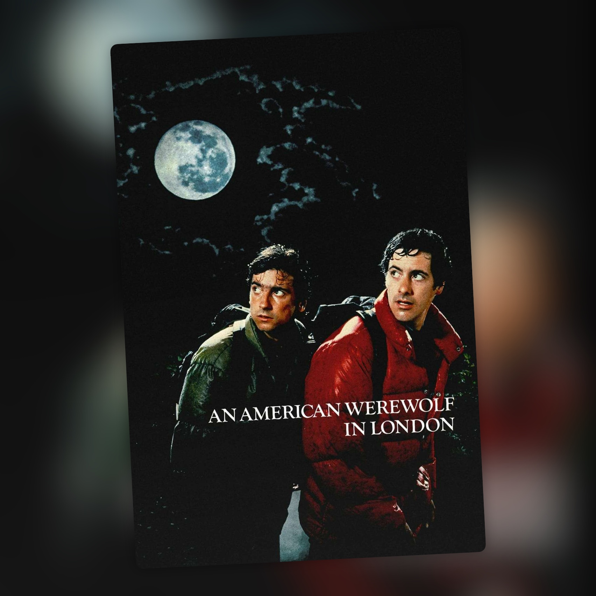

Un hombre lobo americano en Londres (1981)
La transformación sigue siendo lo mejor, y han pasado más de cuarenta años

Era la primera vez que veía Un hombre lobo americano en Londres y los efectos me han flipado. La transformación me ha encantado, y eso que la película es de 1981: ves cómo el cuerpo va cambiando delante de la cámara y sigue resultando bastante bestia hoy.
Detrás está Rick Baker, que hizo el trabajo con prótesis y efectos mecánicos y ganó con él el primer Óscar de maquillaje que se entregó como categoría propia. La transformación tardó una semana en rodarse y no intenta esconder el proceso con fundidos ni trucos de cámara. El cuerpo cambia poco a poco, con los gritos de David Naughton de fondo. Los efectos de Baker aparecen durante toda la película, y con lo acostumbrados que estamos a que casi todo se haga en digital, resulta curioso que una transformación de hace más de cuarenta años siga siendo de lo que más impresiona.
La dirige John Landis, que también escribió el guion. Por entonces venía de Desmadre a la americana y Granujas a todo ritmo, y luego seguiría con películas como Entre pillos anda el juego y Un príncipe en Nueva York, además del vídeo de Thriller. Aquí mezcla terror y comedia de una manera bastante particular: hay momentos realmente desagradables y otros que buscan directamente la risa, y la película salta de unos a otros con bastante facilidad. Hasta la banda sonora va por ahí, con canciones sobre la luna como Blue Moon, Bad Moon Rising y Moondance.
También me ha gustado esa mezcla, aunque es ahí donde más se nota el paso del tiempo. Hay partes que siguen funcionando muy bien y otras que hoy me han resultado bastante más flojas. El tono no siempre encaja y algunas situaciones tienen más gracia por lo que representan en una película de 1981 que por lo que provocan ahora. El trabajo de Baker, en cambio, ha aguantado muchísimo mejor: los demás maquillajes mantienen una presencia física que hoy se agradece.
David Naughton está bastante bien como protagonista. Buena parte de lo que vemos es a David intentando asumir lo que le está pasando y lo que significa que vaya a convertirse en un hombre lobo. Griffin Dunne tiene algunos de los momentos más divertidos de la película como el amigo que vuelve después de morir, cada vez más descompuesto, para convencer a David de que haga algo antes de que sea demasiado tarde.
Tres estrellas y media: los efectos la suben y lo que ha envejecido peor la frena.
Ficha técnica
- Título original: An American Werewolf in London
- Dirección: John Landis
- Guion: John Landis
- Reparto principal: David Naughton, Jenny Agutter, Griffin Dunne, John Woodvine
- Año: 1981
- Duración: 97 min
- Plataforma(s) actual(es) en España: Lionsgate+ (Amazon Channels)